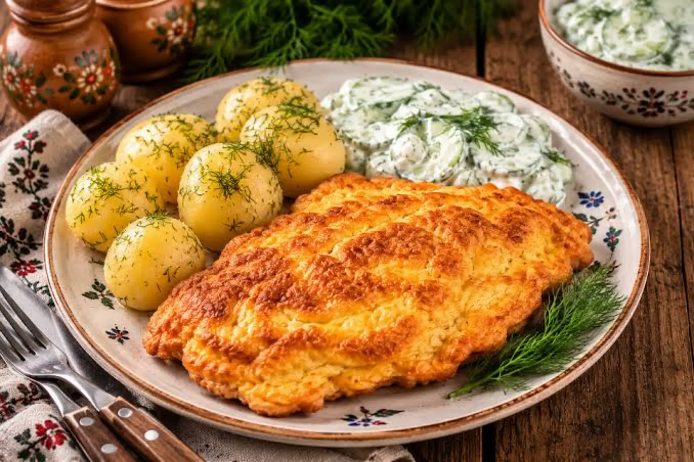

ARTYKUŁ • 17 października 2026
Kuchnia lubelska — cebularze, pierogi z bryndzą i pstrąg z Roztocza
Kuchnia Lubelszczyzny to mieszanka polskich, ukraińskich i żydowskich tradycji. Sprawdź, co warto zjeść w regionie, gdzie spotykają się kultury Wschodu i Zachodu — z konkretnymi miejscami i cenami.

Kuchnia Lubelszczyzny to kuchnia pogranicza — tu spotykają się wpływy polskie, ukraińskie i żydowskie. Widać to w potrawach: pierogi z bryndzą, cebularze, krupnik, kasze, ziemniaki. Wszystko to dania proste, ziemiste i głęboko sycące. Lubelszczyzna przez wieki była regionem wielokulturowym — obok Polaków mieszkali tu Ukraińcy, Żydzi, Ormianie i Niemcy. Każda z tych grup wniosła coś do lokalnej kuchni: Żydzi — pieczywo i ryby, Ukraińcy — pierogi i kasze, Ormianie — przyprawy i wędliny. Efekt to jedna z najbardziej różnorodnych kuchni regionalnych w Polsce, wciąż mało znana poza regionem.
Ten przewodnik pokazuje 6 dań, które trzeba spróbować na Lubelszczyźnie, oraz konkretne miejsca w Lublinie, Zamościu i na Roztoczu, gdzie zjesz je w wersji autentycznej.
Pieczywo i wypieki
1. Cebularz lubelski
Płaskie ciasto drożdżowe z cebulą i makiem — jedno z najbardziej rozpoznawalnych dań regionu. Sprzedawany na targach i w piekarniach w całej Lubelszczyźnie. Najlepszy świeżo upieczony, z masłem. Cebularz lubelski został wpisany na listę produktów chronionych UE w 2014 roku — ma chronioną nazwę pochodzenia. Tradycja wypieku sięga XIX wieku, kiedy to lubelscy piekarze zaczęli wypiekać płaskie placki z cebulą, posypane makiem. Sekret dobrego cebularza to ciasto drożdżowe wyrabiane ręcznie oraz cebula zeszkolona na złoty kolor, a nie surowa — dzięki temu placek jest słodkawy, nie ostry.
Cena: 4–7 zł za sztukę. Gdzie: Piekarnia Kuźmiuk (Lublin, ul. Głęboka 23), Cukiernia Sowa (Lublin, Krakowskie Przedmieście 66), Targ pod Zamkiem (Lublin, sobota rano), Piekarnia Zamość (Zamość, ul. Grodzka 24).
2. Chałka lubelska
Słodkie pieczywo drożdżowe w formie warkocza, posypane kruszonką lub makiem. Popularne na śniadanie, do kawy lub herbaty. Symbol domowego wypieku na Lubelszczyźnie. Chałka różni się od innych polskich pieczyw tym, że jest bardziej miękka i delikatna — ciasto zawiera więcej jajek i masła. Na Lubelszczyźnie chałkę piecze się też w wersji świątecznej — z bakaliami i rodzynkami, podawaną na Wielkanoc. Warto kupić ją w piekarni, a nie w supermarkecie — tam jest nieporównywalnie lepsza.
Cena: 8–15 zł za chałkę. Gdzie: Piekarnia Kuźmiuk (Lublin), Piekarnia Rarytas (Lublin, ul. Rusałka 12), lokalne piekarnie w Zamościu i Chełmie.
Dania główne
3. Pierogi z bryndzą
Delikatne pierogi z owczym serem — specjalność pogranicza polsko-ukraińskiego. Podaje się je ze skwarkami lub śmietaną. Bryndza nadaje im charakterystyczny, lekko słony smak. Bryndza to ser owczy, produkowany na Podhalu i w Karpatach Wschodnich — na Lubelszczyznę trafiła wraz z osadnikami ukraińskimi i łemkowskimi, którzy przybyli tu po 1947 r. w ramach Akcji „Wisła”. Dziś pierogi z bryndzą to jedno z najbardziej rozpoznawalnych dań Lubelszczyzny — podaje się je w większości restauracji regionalnych, a także w barach mlecznych. Ciasto na pierogi jest cienkie, farsz — kremowy, z wyraźnym akcentem owczego sera.
Cena: 20–30 zł za porcję (8–10 sztuk). Gdzie: Bar Mleczny Lubelski (Lublin, ul. Krakowskie Przedmieście 21), Restauracja Kardamon (Lublin, ul. Rynek 11), Karczma Łemkowska (Zamość, ul. Staszica 8).
4. Pierogi z kapustą i grzybami
Tradycyjne pierogi, które na Lubelszczyźnie mają swoją specyfikę — nadzienie jest bardziej pikantne, z dodatkiem majeranku i pieprzu. Podaje się je na Wigilię, wesela i uroczystości rodzinne. Farsz przygotowuje się z kapusty kiszonej i suszonych grzybów (najczęściej prawdziwków lub podgrzybków), a przyprawia majerankiem, pieprzem i cebulą. W wersji lubelskiej dodaje się też czasem kaszę gryczaną, co nadaje pierogom bardziej „ziemisty” charakter. Podaje się je ze skwarkami, cebulką lub śmietaną. To danie, które na Lubelszczyźnie je się nie tylko na Wigilię — bywa podawane w barach mlecznych przez cały rok.
Cena: 18–28 zł za porcję. Gdzie: Bar Mleczny Lubelski (Lublin), Restauracja Kardamon (Lublin), Karczma Łemkowska (Zamość).
5. Pstrąg z Roztocza
Pstrąg hodowany w lokalnych gospodarstwach na Roztoczu. Świeży, z grilla lub z rusztu, z chrzanem i cytryną. Jedno z najlepszych dań, jakie można zjeść w regionie. Roztocze to region, w którym hodowla pstrąga ma długą tradycję — czyste rzeki i strumienie (Wieprz, Tanew, Gorajec) oraz chłodny klimat sprzyjają hodowli. W gospodarstwach rybackich w okolicach Zwierzyńca, Krasnobrodu i Józefowa pstrągi hoduje się w stawach i klatkach, a następnie sprzedaje do lokalnych smażalni i restauracji. Pstrąg z Roztocza jest podawany na kilka sposobów: z grilla, wędzony, smażony na maśle, a nawet w galarecie. Najlepszy jest jednak świeży, prosto z rusztu, z chrzanem i cytryną.
Cena: 35–55 zł za porcję (1 pstrąg z dodatkami). Gdzie: Gospodarstwo Rybackie Jacnia (Jacnia, Roztocze), Smażalnia Pstrąga Roztocze (Zwierzyniec, ul. Browarna 5), Restauracja Roztocze (Zamość, ul. Partyzantów 6).
Zupy i dodatki
6. Krupnik lubelski
Zupa z kaszy jęczmiennej z dodatkiem warzyw i mięsa. W wersji lubelskiej — z dodatkiem suszonych grzybów i śmietany. Sycąca, rozgrzewająca, idealna na chłodne dni. Krupnik to jedna z najstarszych zup kuchni polskiej — jej historia sięga średniowiecza. Na Lubelszczyźnie krupnik ma swoją specyfikę: jest gęstszy, z większą ilością kaszy i mięsa, a dodatek suszonych grzybów (często prawdziwków) nadaje mu głębszy, leśny aromat. W wersji weselnej krupnik bywa podawany z dodatkiem śmietany i żółtka, co nadaje mu kremową konsystencję. Na Lubelszczyźnie krupnik jest tradycyjnie podawany na weselach — to jedna z tych zup, które „muszą być”.
Cena: 12–20 zł za miskę. Gdzie: Bar Mleczny Lubelski (Lublin), Restauracja Kardamon (Lublin), Karczma Łemkowska (Zamość).
Gdzie jeść — konkretne miejsca
Lublin (Stare Miasto i Krakowskie Przedmieście):
- Bar Mleczny Lubelski (ul. Krakowskie Przedmieście 21) — klasyk, tanie i autentyczne dania regionalne.
- Restauracja Kardamon (Rynek 11) — elegancka kuchnia lubelska, pierogi z bryndzą, krupnik.
- Cukiernia Sowa (Krakowskie Przedmieście 66) — cebularze, chałka, wypieki.
- Piekarnia Kuźmiuk (ul. Głęboka 23) — najlepsze cebularze w Lublinie.
Zamość (Rynek Wielki i okolice):
- Karczma Łemkowska (ul. Staszica 8) — kuchnia pogranicza, pierogi z bryndzą i kapustą.
- Restauracja Roztocze (ul. Partyzantów 6) — pstrąg z Roztocza, krupnik.
- Piekarnia Zamość (ul. Grodzka 24) — cebularze, chałka.
Roztocze (Zwierzyniec, Krasnobród, Józefów):
- Gospodarstwo Rybackie Jacnia (Jacnia) — pstrąg świeży z hodowli, z grilla.
- Smażalnia Pstrąga Roztocze (Zwierzyniec, ul. Browarna 5) — pstrąg smażony, wędzony, w galarecie.
- Agroturystyka Roztocze (Krasnobród) — domowa kuchnia lubelska, krupnik, pierogi.
Praktyczne wskazówki
- Cebularze kupuj rano — najlepsze są świeżo upieczone. Po południu w piekarniach zostają już tylko te z drugiego wypieku.
- Pstrąga z Roztocza zamawiaj w gospodarstwach rybackich, nie w restauracjach w centrum Lublina — tam ryba jest droższa i często mrożona.
- Pierogi z bryndzą najlepsze są w barach mlecznych i małych restauracjach — nie w eleganckich lokalach na Starym Mieście.
- Krupnik lubelski podaje się na weselach i uroczystościach — w restauracjach bywa dostępny, ale najczęściej w wersji „restauracyjnej”, mniej gęstej niż domowa.
- Chałkę lubelską najlepiej kupować w małych piekarniach — w supermarketach jest zwykle sucha i bez charakteru.
- W sezonie letnim (lipiec–sierpień) na Roztoczu jest tłoczno — w weekendy warto rezerwować stolik w smażalniach pstrąga z wyprzedzeniem.
Podsumowanie
Kuchnia lubelska to kuchnia pogranicza — polska, ukraińska i żydowska tradycja spotykają się tu na jednym talerzu. Sycąca, ziemista, mocno zakorzeniona w tradycji wielokulturowego regionu. Zamiast modnych dań znajdziesz tu klasykę: cebularze, pierogi z bryndzą, pstrąga z Roztocza, krupnik. Warto zaplanować wyjazd na Lubelszczyznę tak, żeby spróbować przynajmniej czterech z sześciu dań — a najlepiej zjeść je w miejscach, gdzie kuchnia jest wciąż domowa, a nie turystyczna. Jeśli lubisz regiony pogranicza, sprawdź też nasze strony o Podlasiu i Roztoczu — tam kuchnia wygląda podobnie, ale z własnymi akcentami.